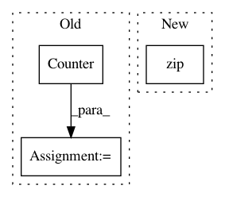

1070ee6fe00f2a3b03273e6a6dbf5625ab4dffc7,tmtoolkit/preprocess/_tmpreproc.py,TMPreproc,vocabulary_abs_doc_frequency,#TMPreproc#,132
Before Change
workers_vocab_counts = self._get_results_seq_from_workers("get_vocab_doc_freq")
// sum up the worker"s doc. frequencies
self._cur_vocab_doc_freqs = sum(map(Counter, workers_vocab_counts), Counter())
return self._cur_vocab_doc_freqs
@property
After Change
def vocabulary_abs_doc_frequency(self):
_, vocab, dtm = self.dtm
return dict(zip(vocab, get_doc_frequencies(dtm)))
@property
def vocabulary_rel_doc_frequency(self):
In pattern: SUPERPATTERN
Frequency: 3
Non-data size: 3
Instances
Project Name: WZBSocialScienceCenter/tmtoolkit
Commit Name: 1070ee6fe00f2a3b03273e6a6dbf5625ab4dffc7
Time: 2019-03-12
Author: markus.konrad@wzb.eu
File Name: tmtoolkit/preprocess/_tmpreproc.py
Class Name: TMPreproc
Method Name: vocabulary_abs_doc_frequency
Project Name: dmlc/gluon-nlp
Commit Name: 043e3000ad4a59f434e1975f9f0f7c0ac9aead53
Time: 2018-04-22
Author: xshiab@ust.hk
File Name: scripts/nmt/bleu.py
Class Name:
Method Name: compute_bleu
Project Name: home-assistant/home-assistant
Commit Name: d6abdc0d4efa8386e549a9c8bbacc52bf5c82f7e
Time: 2016-04-08
Author: jaharkes@cs.cmu.edu
File Name: homeassistant/util/yaml.py
Class Name:
Method Name: _ordered_dict